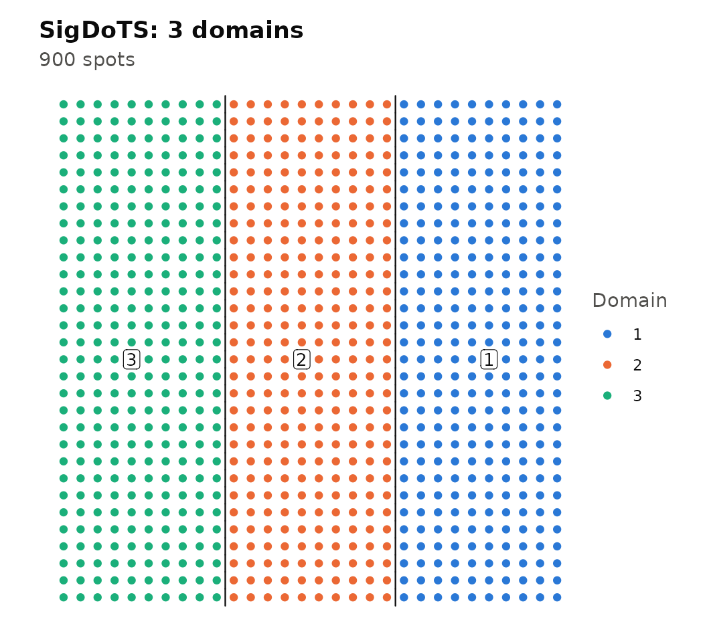
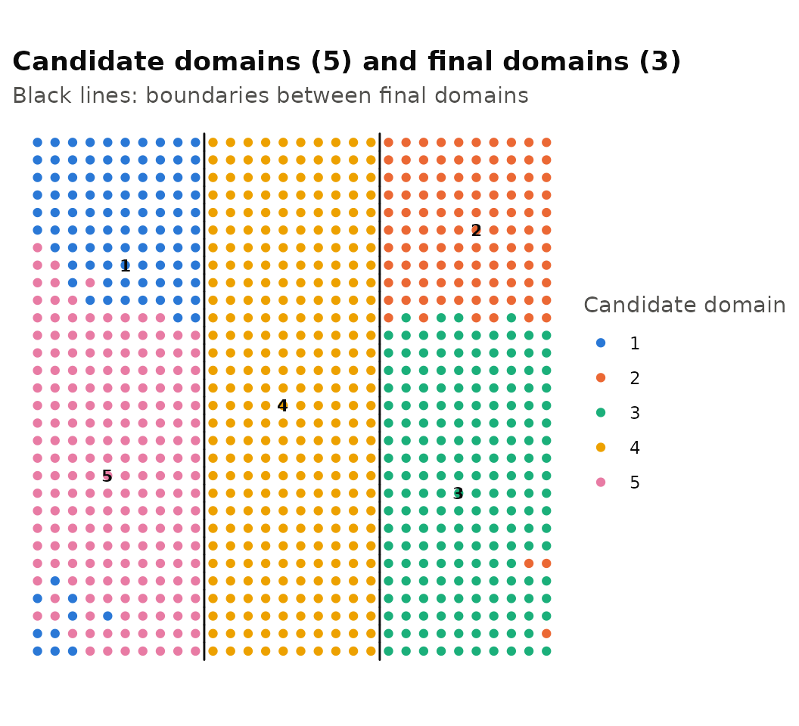
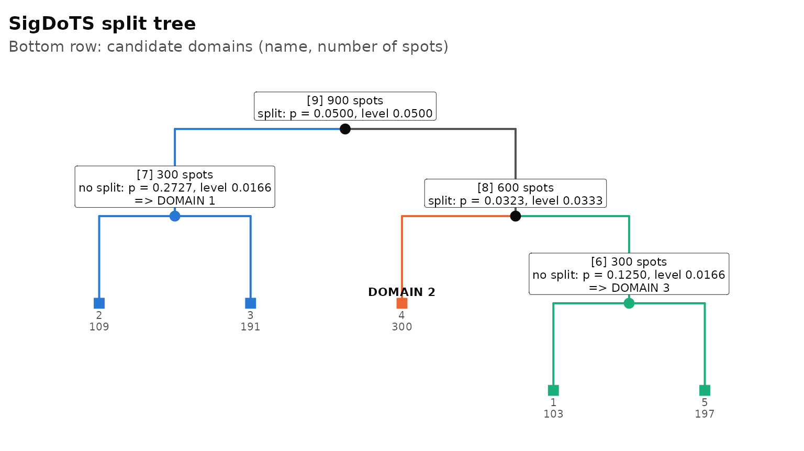
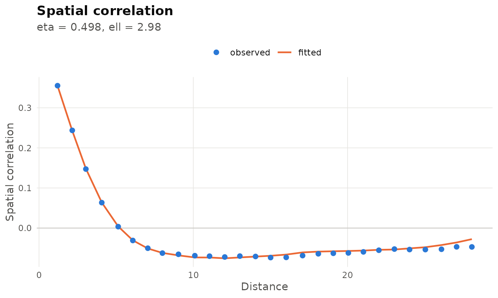

This tutorial runs SigDoTS on the simulated dataset that comes with the package and shows how to read every part of the result. It takes about half a minute to run.
The example data
sigdots_example has 900 spots on a 30 x 30 grid and 200
genes. The spots belong to three true domains of 300 spots each. Forty
of the genes (“marker” genes) have different means in the three domains;
the noise is correlated between nearby spots and between genes.
str(sigdots_example, max.level = 1)
#> List of 3
#> $ x : num [1:900, 1:200] 4.92 4.93 4.02 3.07 4.05 ...
#> ..- attr(*, "dimnames")=List of 2
#> $ coords: num [1:900, 1:2] 0 0.0345 0.069 0.1034 0.1379 ...
#> ..- attr(*, "dimnames")=List of 2
#> $ region: int [1:900] 1 1 1 1 1 1 1 1 1 1 ...
sigdots_example$x[1:3, c(1:3, 198:200)]
#> marker001 marker002 marker003 gene198 gene199 gene200
#> spot001 4.915282 2.735289 3.102794 3.921413 4.566967 4.581417
#> spot002 4.926125 2.894889 4.703922 4.998155 3.540437 4.564075
#> spot003 4.016329 3.861754 3.960442 5.509391 2.446467 4.972528
table(sigdots_example$region)
#>
#> 1 2 3
#> 300 300 300SigDoTS needs two things: the expression matrix x (one
row per spot, one column per gene, already normalised) and the
coordinates coords (one row per spot, two columns, in the
same order). The true regions are not used; we keep them to compare with
the result.
If your data are in a Seurat or SpatialExperiment object, pass the
object itself instead of the two matrices; see
vignette("own-data").
Running SigDoTS
The one choice to make is the number of candidate domains,
K0. SigDoTS first divides the spots into K0
candidate domains (by default with k-means on the first 15 principal
components). K0 should be larger than the number of domains
you expect, so that each candidate domain lies inside one true domain;
SigDoTS then decides which candidate domains to merge. Here we use
K0 = 5 for three true domains.
fit <- sigdots(sigdots_example$x, sigdots_example$coords, K0 = 5)
#> SigDoTS: 900 spots, 200 genes; 5 candidate domains; testing from the top of the tree
#> test at node 9 (900 spots, 5 candidate domains): split (19 simulated datasets) [12 s]
#> test at node 7 (300 spots, 2 candidate domains): no split (10 simulated datasets) [2 s]
#> test at node 8 (600 spots, 3 candidate domains): split (30 simulated datasets) [9 s]
#> test at node 6 (300 spots, 2 candidate domains): no split (15 simulated datasets) [3 s]While it runs, SigDoTS prints one line per test: where in the tree
the test is, how many spots and candidate domains that part has, the
decision, the number of simulated datasets it used and the time it took.
verbose = FALSE silences these lines.
The split tree
fit
#> SigDoTS: 900 spots, 200 genes
#> Number of domains: 3 (spots per domain: 300, 300, 300)
#>
#> Split tree ([node] spots, candidate domains: decision):
#> [9] 900 spots, candidate domains 1,2,3,4,5: split
#> ├── [7] 300 spots, candidate domains 2,3: no split => DOMAIN 1
#> │ ├── candidate domain 2 109 spots
#> │ └── candidate domain 3 191 spots
#> └── [8] 600 spots, candidate domains 1,4,5: split
#> ├── [4] 300 spots, candidate domain 4 => DOMAIN 2
#> └── [6] 300 spots, candidate domains 1,5: no split => DOMAIN 3
#> ├── candidate domain 1 103 spots
#> └── candidate domain 5 197 spots
#>
#> Use summary() for the tests.How to read the tree:
- Each line starting with a number in brackets is a part of the tree (a node), with its number of spots and the candidate domains it contains.
-
splitorno splitis the decision of the test at that node. SigDoTS tests from the top: the whole sample first; the two sides of a split are tested in turn. -
=> DOMAIN kmarks a part that was not split further: it is the k-th final domain. Inside a domain, only the candidate domains and their sizes are listed. - A single candidate domain (here candidate domain 4,
[4]) is never tested; when its parent is split, it becomes a domain by itself.
The tests
summary(fit)
#> SigDoTS 0.2.5.8
#> Data: 900 spots x 200 genes
#> Start: k-means on 15 principal components; 5 candidate domains
#> Spatial: Vecchia approximation (60 neighbours)
#> Level: 0.05 for the whole tree
#> P-values: Monte Carlo
#>
#> Number of domains: 3 (spots per domain: 300, 300, 300)
#>
#> Split tree:
#> [9] 900 spots, candidate domains 1,2,3,4,5: split
#> ├── [7] 300 spots, candidate domains 2,3: no split => DOMAIN 1
#> │ ├── candidate domain 2 109 spots
#> │ └── candidate domain 3 191 spots
#> └── [8] 600 spots, candidate domains 1,4,5: split
#> ├── [4] 300 spots, candidate domain 4 => DOMAIN 2
#> └── [6] 300 spots, candidate domains 1,5: no split => DOMAIN 3
#> ├── candidate domain 1 103 spots
#> └── candidate domain 5 197 spots
#>
#> Tests, from the top:
#> test spots statistic null_used p level decision
#> [9] 900 0.718 19 0.0500 0.0500 split
#> [7] 300 0.935 10 0.2727 0.0166 no split
#> [8] 600 0.903 30 0.0323 0.0333 split
#> [6] 300 0.946 15 0.1250 0.0166 no splitThe table has one row per test: statistic is the split
statistic of the data (between 0 and 1; smaller means a clearer split),
null_used the number of simulated single-domain datasets
the test used, p the p-value, level the
significance level of this test, and decision the outcome.
A split is made when p <= level. The level of a test on
m of the n spots is alpha * (m - 1) / (n - 1) (here
alpha = 0.05 and n = 900), which keeps the probability of
any false split in the whole tree at most alpha. Every
column is explained in ?summary.sigdots.
By default each test simulates 10 datasets, raised for a test to the
smallest number with which the p-value can reach the level (19 at the
first test), and stops as soon as the decision cannot change. With so
few datasets a p-value takes only a few values; the decision is what the
test establishes. Finer p-values cost more time (B_min,
B_max).
The table is also returned as a data frame:
summary(fit)$tests
#> node spots candidate_domains statistic null_used p_value level
#> 1 9 900 1,2,3,4,5 0.7178312 19 0.05000000 0.05000000
#> 2 7 300 2,3 0.9345954 10 0.27272727 0.01662959
#> 3 8 600 1,4,5 0.9027189 30 0.03225806 0.03331479
#> 4 6 300 1,5 0.9464686 15 0.12500000 0.01662959
#> decision
#> 1 split
#> 2 no split
#> 3 split
#> 4 no splitGetting the domains
head(domains(fit))
#> spot domain candidate_domain
#> 1 spot001 3 1
#> 2 spot002 3 1
#> 3 spot003 3 1
#> 4 spot004 3 5
#> 5 spot005 3 5
#> 6 spot006 3 5
table(domain = domains(fit)$domain, true_region = sigdots_example$region)
#> true_region
#> domain 1 2 3
#> 1 0 0 300
#> 2 0 300 0
#> 3 300 0 0The three domains are the three true regions.
domains(fit) has one row per spot in the order of the data,
so it can be joined to any other per-spot information. If the data came
from a Seurat or SpatialExperiment object,
add_domains(object, fit) writes the domain of every spot
into the object.
Plots
plot() draws four kinds of plots, all ggplot2 objects
that you can modify as usual.
The final domains, with the domain numbers and the boundaries between domains:
plot(fit)
The candidate domains, with the boundaries of the final domains, showing which candidate domains were merged:
plot(fit, type = "candidates")
The split tree, with each test’s decision, p-value and level:
plot(fit, type = "tree")
The spatial correlation of the noise, as SigDoTS estimated it at the
first test for the single-domain model: the points are the correlation
between pairs of spots at each distance (in units of the distance
between neighbouring spots), after removing each candidate domain’s mean
and averaged over genes; the line is what the fitted model gives.
eta is the share of the noise variance that is spatially
correlated and ell how far the correlation reaches; here
both are close to the values the data were simulated with (0.5 and 3).
The line following the points means the model describes the spatial
correlation of the data. test = draws the same plot for
another test of the tree.
plot(fit, type = "correlogram")
Reproducibility
The same data, arguments and seed (default 1) give the
same result, whatever the number of cores (n_cores).
SigDoTS does not change the random-number state of your session.
When a part of the tree cannot be tested
To estimate eta and ell, SigDoTS needs
enough pairs of spots from the same candidate domain at several
distances: at least 4 distance bins with at least 200 such pairs each. A
part of the tree with very few spots (on a regular grid, fewer than
about 80) does not have them. SigDoTS then leaves that part untested,
still tests the rest of the tree, warns at the end, marks the part
[!] NOT TESTED in the tree, and gives its spots no domain
(NA in domains()). Using fewer candidate
domains (a smaller K0) makes the parts larger.
Next
-
vignette("own-data", package = "SigDoTS"): preparing your own data and choosing the options. -
vignette("faq", package = "SigDoTS"): every error and warning, and the questions users ask most. -
vignette("how-it-works", package = "SigDoTS"): what SigDoTS computes, step by step.